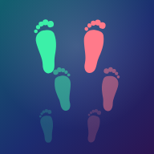

Khatwatnaمرحبًا بك في «خطوتنا»، تطبيق للمشي وعدّ الخطوات مع دائرة من الأصدقاء. نحترم خصوصيتك، وتشرح هذه السياسة بوضوح ما البيانات التي نجمعها، وأين تُحفظ، ومن يراها، وما حقوقك وفق نظام حماية البيانات الشخصية في المملكة العربية السعودية.
يُشغِّل تطبيق خطوتنا شركة Talnk («نحن»). للتواصل بشأن الخصوصية أو لممارسة حقوقك: support@talnk.com.
التطبيق مخصص لمن بلغوا 18 سنة فأكثر. لا ننشئ حسابات لمن هم دون ذلك عن قصد، وإذا علمنا بوجود حساب لقاصر فسنحذفه.
نستخدم خدمة Supabase لاستضافة قاعدة البيانات، وتقع خوادمها في منطقة ap-south-1 (مومباي، الهند). نحفظ هناك فقط ما يلزم لعمل الدائرة:
رموز تسجيل الدخول تُرسَل إلى بريدك عبر خدمة Resend (الولايات المتحدة الأمريكية)، ولا نحفظ هذه الرموز بعد استخدامها.
البيانات التالية تُحفظ في متصفح جهازك فقط، ولا تُرسَل إلى خوادمنا إلا إذا فعّلت النسخة الاحتياطية (القسم ٤ب):
إذا مسحت بيانات المتصفح أو غيّرت جهازك فقد تفقد هذه البيانات، لأنها ليست لدينا.
النسخة الاحتياطية (اختيارية، مقفلة افتراضياً، تفعّلها بنفسك): إذا كانت مفعّلة نحفظ نسخة من بيانات التطبيق في حسابك على خوادمنا (الطول والوزن والقياسات والأكل والمشاوير مع مسار مختصر والإعدادات) حتى تستعيدها على جهاز جديد. تقدر توقفها من «أنا ← بياناتك» وتنحذف النسخة فوراً.
الإشعارات: إذا فعّلتها نحفظ عنوان اشتراك الإشعارات الخاص بمتصفحك، ولغتك، وأوقات التذكير، وهدفك اليومي، وفرق التوقيت، وموقعاً تقريبياً (بدقة ١٠ كم تقريباً) لحساب أوقات الصلاة. تنحذف عند إيقاف الإشعارات أو تسجيل الخروج.
البلاغات: عند الإبلاغ عن محتوى نحفظ البلاغ ونسخة من المحتوى ونرسلها لفريق الدعم على support@talnk.com للمراجعة.
لا نبيع بياناتك، ولا نعرض إعلانات، ولا نستخدم بياناتك للتسويق.
أعضاء دائرتك يرون: اسمك الأول، وخطواتك اليوم وهذا الأسبوع، ودورك في الدائرة، والرسائل والملاحظات الصوتية والصور التي ترسلها إلى تلك الدائرة فقط. إذا كنت في أكثر من دائرة، فكل دائرة ما تشوف الثانية.
لا يرى أعضاء الدائرة أبدًا بريدك الإلكتروني ولا بيانات جسمك.
يعني ذلك نقل بعض بياناتك الشخصية إلى خارج المملكة العربية السعودية (الهند والولايات المتحدة). نُفصح عن هذا النقل وفق نظام حماية البيانات الشخصية ولوائحه، ونقتصر فيه على الحد الأدنى اللازم، مع اتخاذ الضمانات المناسبة.
وفق نظام حماية البيانات الشخصية يحق لك:
لأي طلب آخر راسلنا على support@talnk.com، وسنرد خلال المدة النظامية.
لا يوجد نظام آمن تمامًا، وسنُبلغك والجهات المختصة وفق النظام إذا وقع حادث يمس بياناتك.
قد نحدّث هذه السياسة. سننشر النسخة الجديدة هنا مع تاريخ التحديث، وننبّهك داخل التطبيق إذا كان التغيير جوهريًا.
Welcome to Khatwatna, a walking and step-tracking app you use with a circle of friends. This policy explains plainly what data we collect, where it is stored, who can see it, and your rights under the Saudi Personal Data Protection Law (PDPL).
Khatwatna is operated by Talnk ("we"). For privacy questions or to exercise your rights, contact support@talnk.com.
Khatwatna is for people aged 18 and over. We do not knowingly create accounts for anyone younger, and we will delete such an account if we learn of it.
Our database is hosted by Supabase in region ap-south-1 (Mumbai, India). We store there only what your circle needs to work:
Sign-in codes are emailed to you through Resend (United States) and are never stored by us.
The following stays in your device’s browser and is not sent to our servers unless you turn on Backup (section 4b):
If you clear your browser data or switch devices, this data may be lost, because we do not have a copy.
Backup (optional, off unless you turn it on): when on, we keep a copy of your app data on your account (height, weight, measurements, food, walks with a simplified route, settings) so you can restore it on a new device. Turn it off under You → Your data and the copy is deleted right away.
Notifications: if you turn them on, we store your browser's push subscription address, language, reminder times, daily goal, time-zone offset and an approximate location (about 10 km) to work out prayer times. They're deleted when you turn notifications off or sign out.
Reports: when you report content we keep the report and a copy of the content and send it to our support team at support@talnk.com for review.
We do not sell your data, we show no ads, and we do not use your data for marketing.
Members of your circle see your first name, your steps today and this week, your role in the circle, and the messages, voice notes and photos you send to that circle only. If you are in more than one circle, each circle cannot see the others.
Circle members never see your email address or your body data.
This means some of your personal data is transferred outside the Kingdom of Saudi Arabia (to India and the United States). We disclose this transfer as required by the PDPL and its regulations, limit it to the minimum necessary, and apply appropriate safeguards.
Under the PDPL you have the right to:
For any other request, email support@talnk.com and we will respond within the period required by law.
No system is perfectly secure. If an incident affects your data, we will notify you and the relevant authorities as the law requires.
We may update this policy. We will post the new version here with its date and let you know in the app if a change is significant.